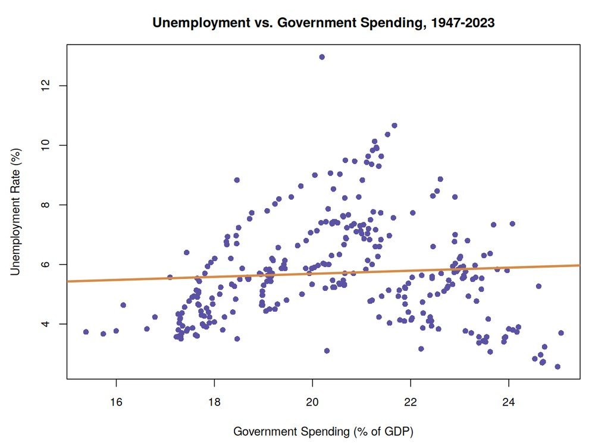
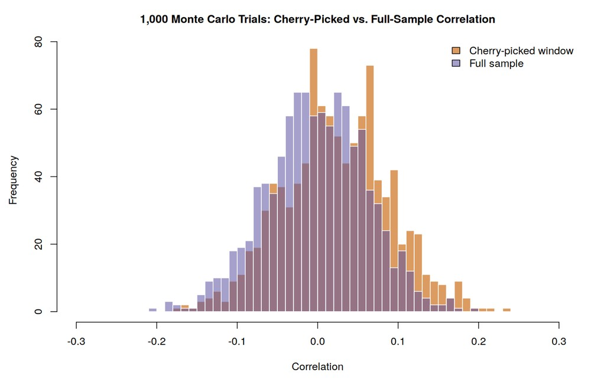

Economist John Taylor argued that higher government spending, as a percent of GDP, is associated with higher unemployment, using U.S. data from 1990–2010. This project replicates that analysis with quarterly FRED data from 1947–2023, then stress-tests it against the Justin Wolfers-style critique that a result like Taylor's can emerge simply from cherry-picking a favorable time window — even in data with no real relationship at all.
I built a data pipeline merging unemployment, GDP, and government spending series from FRED, then fit a regression of the unemployment rate on spending-as-percent-of-GDP interacted with decade, to test whether the relationship Taylor found is stable over time. To test the cherry-picking critique directly, I ran a Monte Carlo simulation: 1,000 trials, each generating two independent random series and searching across sub-windows for the single most favorable correlation, compared against the full-sample correlation of the same random data.

The full regression explains a meaningful share of the variation (adjusted R² ≈ 0.65) and, in the baseline period, higher spending is associated with higher unemployment (p < 0.001) — the direction Taylor reported. But the interaction terms show this relationship is not stable: it strengthens in some decades and weakens or reverses in others. The Monte Carlo simulation shows why that matters: searching sub-windows of purely random data still produces a modest positive correlation (mean ≈ 0.024) that is significantly higher than the full-sample correlation (mean ≈ 0.00, Welch t-test p < 2.2e-16). Together, this supports treating Taylor's original 1990–2010 finding with caution rather than as a stable, universal relationship.
The basic idea, in plain terms. A correlation is just a number between -1 and 1 that says how closely two things move together: 0 means no relationship, and the closer to 1 or -1, the stronger the relationship. A Monte Carlo simulation means running an experiment thousands of times with fresh random data each time, purely to see what patterns show up by chance alone — it's a way to build a "control group" for statistics. And statistically significant (usually shown as a p-value) answers one specific question: if there were truly no real relationship at all, how likely is it we'd still see a difference this large just from random luck? A small p-value (conventionally under 0.05, and certainly under 0.001) means "very unlikely to be luck" — it doesn't prove the effect is big or important, only that it's probably real.
Step 1 — does spending predict unemployment? Written in R / R Markdown. After merging the FRED series (unemployment, GDP, government spending) by date and computing spending as a percent of GDP, the core regression tests whether the spending–unemployment relationship holds across decades:
years <- as.integer(format(merged_dat$Date, "%Y"))
decades <- as.factor((years %/% 10) * 10)
summary(lm(percent ~ spending_gdp * decades, data = merged_dat))The interaction term (spending_gdp * decades) is what lets the slope vary by decade instead of assuming one fixed relationship. The model's adjusted R² ≈ 0.65 means the model explains about 65% of the quarter-to-quarter variation in unemployment — a genuinely strong fit for messy real-world economic data. But that's an average across all decades; that's what exposes the instability discussed in the Results section above — the relationship is real on average, but it isn't the same relationship every decade.
Step 2 — but could a "finding" like this just be luck? This is the cherry-picking critique: if you're allowed to search through history and report only the time window that looks best, you can make almost any two unrelated things look connected. To test how big that effect can be, the second half of the script runs a 1,000-trial Monte Carlo simulation using pure, made-up random noise (numbers with, by construction, zero real relationship to each other) and asks: how much fake "signal" does cherry-picking manufacture out of nothing?
simulate_cherry_picking <- function(num_replications = 1000, total_quarters = 256, min_quarters = 60) {
cherry_picked_correlations <- numeric(num_replications)
full_sample_correlations <- numeric(num_replications)
for (i in 1:num_replications) {
x <- rnorm(total_quarters)
y <- rnorm(total_quarters)
full_sample_correlations[i] <- cor(x, y)
max_correlation <- -Inf
for (j in (total_quarters - min_quarters + 1):total_quarters) {
start_quarter <- total_quarters - j + 1
end_quarter <- total_quarters
cherry_correlation <- cor(x[start_quarter:end_quarter], y[start_quarter:end_quarter])
max_correlation <- max(max_correlation, cherry_correlation)
}
cherry_picked_correlations[i] <- max_correlation
}
list(cherry_picked = cherry_picked_correlations, full_sample = full_sample_correlations)
}Each of the 1,000 trials generates two completely independent random series (rnorm(), no real relationship by construction), then searches every possible sub-window of that fake data for the single highest correlation it can find. Repeating this 1,000 times builds up two distributions: what correlation you'd typically see using the full random dataset (it should hover around 0, since there's really nothing there), versus what you'd see if you were allowed to cherry-pick the best-looking window each time.
What the result means. The full-sample correlations averaged almost exactly 0, as expected from random noise. But the cherry-picked correlations averaged about 0.024 — small in absolute terms, but a Welch t-test comparing the two distributions returned p < 2.2e-16 (essentially zero probability this gap is a coincidence). In plain English: even with data that has no real relationship whatsoever, letting yourself pick the most flattering time window reliably produces a modest, fake-looking correlation. That's exactly the mechanism the Wolfers critique warns about, and it's why the Results section above treats Taylor's original 1990–2010 finding with caution rather than as a settled fact.
Coursework project — Master of Science in Finance — University of Colorado Boulder, Leeds School of Business